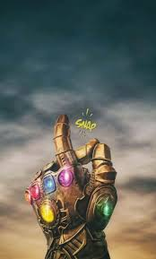

|  | Após o devastador estalar de dedos de Thanos, que eliminou metade de toda a vida no universo, os Vingadores sobreviventes estão quebrados e sem esperança. Determinados a desfazer a tragédia, eles se unem mais uma vez em uma missão quase impossível: viajar pelo tempo em busca das Joias do Infinito, antes que Thanos as obtenha. Durante essa jornada, cada herói enfrenta suas próprias dores e perdas, enquanto colocam em risco suas vidas e laços para restaurar o equilíbrio. O sacrifício se torna inevitável, e uma batalha épica decide o destino de todos os mundos. “Vingadores: Ultimato” é a conclusão de uma saga de mais de dez anos, reunindo coragem, amizade e sacrifício em um confronto final contra o maior inimigo que já enfrentaram. |
Título original: Avengers: Endgame
Título no Brasil: Vingadores: Ultimato
Gênero: Ação, Aventura, Ficção Científica, Super-herói
Duração: 181 minutos (3h 1min)
Classificação indicativa: 12 anos (Brasil) | PG-13 (EUA)
Ano de lançamento: 2019
Data de estreia: 25 de abril de 2019 (Brasil) | 26 de abril de 2019 (EUA)
Direção: Anthony Russo, Joe Russo
Produção: Kevin Feige
Roteiro: Christopher Markus, Stephen McFeely
Estúdio: Marvel Studios
Distribuição: Walt Disney Studios Motion Pictures